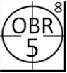
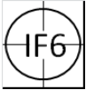
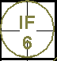
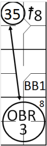
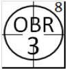
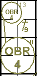
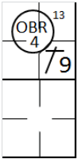
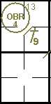

action { batter -> OBR8-5 }

An infield fly [OBR Definition of Terms] “ is a fair fly ball (not including a line drive nor an attempted bunt) which can be caught by an infielder with ordinary effort, when first and second, or first, second and third bases are occupied, before two are out. The pitcher, catcher and any outfielder who stations himself in the infield on the play shall be considered infielders for the purpose of this rule.
When it seems apparent that a batted ball will be an Infield Fly, the umpire shall immediately declare ‘Infield Fly’ for the benefit of the runners. If the ball is near the baselines, the umpire shall declare ‘Infield Fly, if fair’.
If interference is called during an infield fly, the ball remains alive until it is determined whether the ball is fair or foul. If fair, both the runner who interfered with the fielder and the batter are out. If foul, even if caught, the runner is out and the batter returns to bat .”
When the umpire declares an infield fly, the batter is put out in the instant the umpire makes his call, regardless of whether or not the ball is caught on the fly.
The aim of this rule is to avoid penalizing the offensive team by preventing fielders from intentionally dropping the ball in order to make a double play on runners forced to advance.
The batter is out the moment the umpire calls an infield fly, but the ball remains alive and in play, the runners are no longer forced to advance, except at their own risk.
As we have seen in the section on automatic putouts, when the defense fails to catch the ball on the fly, we use the abbreviation “OBR” followed by the number of the fielder who, in the Official Scorer’s opinion, could have made the catch, with the number 8 of the rule outside the circle.
When, on the other hand, the defense does catch the ball, we use the abbreviation “IF” followed by the number of the fielder who makes the catch, without the number of the rule, since the putout is made on a catch, not by rule. The abbreviation “IF” is used rather than “F” to show that the umpire made the call “infield fly” or “infield fly if fair” while the ball was still in the air.
With reference to the infield fly, it is worth noting the following interesting cases:
If a runner is touching his base when touched by an Infield Fly, he is not out, although the batter is out [OBR 5.09(b)(7)].
If a runner is touched by an Infield Fly when he is not touching his base, both runner and batter are out [OBR 5.09(b)(7)] and the ball is dead.
If a declared Infield Fly falls untouched to the ground in foul territory and bounces fair before passing first or third base, it is an Infield Fly.
The examples show how events are recorded differently depending on whether the ball falls untouched or is caught.
Example 20: With bases loaded and one out, the batter hits a high ball to shortstop, which the umpire declares `infield fly´. The fly ball is caught by the shortstop.
| WBSC | Translation in the scoring tool | Tool |
|---|---|---|
|
 |
/* The batter hits a ball in infield fly condition and the ball is caught on the
fly by the shortstop */ action { batter -> IF6 } |
 |
Example 21:
With bases loaded and one out, the batter hits a high ball to third, which the umpire declares
“Infield fly if fair”. As it falls, the ball hits the runner touching third base.
The batter is declared out under “Out By Rule” rule 8, and the putout is credited to the third baseman.
The runner who was hit is not out, and remains on the same base.
| WBSC | Translation in the scoring tool | Tool |
|---|---|---|
|
 |
/* The batter hits a bell in an infield fly situation and the ball, upon landing,
hits the runner who was on third base */ action { batter -> OBR8-5 } |
|
Example 22:
With first and second bases occupied the batter hits a high ball along the line between first base and
home plate, and the umpire therefore declares “Infield fly if fair”; the first baseman goes for the ball but
fails to catch it.
The runner on second base, seeing the bad play, tries to advance to third base, but the first baseman
recovers the ball and assists the third baseman in a putout. The batter is automatically put out under ‘Out By Rule” 8
[9.09(c)(1)] (Infield Fly), while the runner is tagged out.
| WBSC | Translation in the scoring tool | Tool |
|---|---|---|
|
 |
/* The first batter hits a double to center field */ action { batter -> } /* The second batter wins the first base on 'base on ball' */ action { batter -> } /* The third batter hits a high ball in the infield, and an infield fly is called by the umpire. The third baseman tries to catch the fly ball but makes a mistake, and the ball falls to the ground. The second baseman, seeing the mistake, tries to reach third but is tagged by the third baseman. */ action { batter -> OBR8-3 dontCountAsDoublePlay , runner -> 35 } |

|
No error is charged against the first baseman as there were no negative consequences. Score a putout by Infield Fly to the batter, an assist to the first baseman and a putout to both the first baseman and the third baseman.
This is not a double play, as the continuity of action between the two putouts was interrupted by the misplay. This is recorded in the notes of the score-sheet.
Example 23: With first and second bases occupied and one out, the batter hits a fly ball along the line between first base and home plate, and the umpire therefore calls “Infield fly if fair”; the ball lands in foul territory and bounces fair before being touched by a fielder: charge a putout by infield fly to the batter and credit a putout to the fielder nearest the ball (in this case the first baseman).
| WBSC | Translation in the scoring tool | Tool |
|---|---|---|
|
 |
/* The first batter hits a high ball along the line between home plate and first base.
An infield fly is called, but the ball lands in foul zone but rolls into fair zone. */ action { batter -> OBR8-3 } |
If interference is called during an infield fly, the ball remains alive until it is determined whether the ball is fair or foul.
Example 24:
If interference is called during an infield fly, the ball remains alive until it is determined whether the ball
is fair or foul.
If fair, both the runner who interfered with the fielder and the batter are out. [OBR Definition of Terms]
| WBSC | Translation in the scoring tool | Tool |
|---|---|---|

|
/* the first batter hits a hit in right field */ action { batter -> 1B9 } /* The second batter hits a high ball and the infield fly is called. The second baseman drops the ball due to interference from the runner on first base. */ action { batter -> OBR8-4 , runner -> OBR13-4 } |
 |
Example 25:
If foul, even if caught, the runner is out and the batter returns to bat. [OBR Definition of Terms]
| WBSC | Translation in the scoring tool | Tool |
|---|---|---|
|
 |
/* The batter hits a hit in right field */ action { batter -> 1B9 } /* */ action { runner -> OBR13-4 } |
 |
Example 26: With first and second bases occupied and one out, the batter hits a fly ball along the line between third base and home plate, and the umpire therefore calls “Infield fly if fair”; the ball lands in fair territory and bounces foul before being touched by a fielder. This is considered a foul ball, and consequently the batter is not out, he is charged with a further strike (except if he already has two) and returns to bat.
An error is charged to the fielder who was in the best position to catch the ball.
NOTE: As “Out By Rule” rule 8 is an automatic putout, even if it is governed by rule 5.09(a)(12) of the OBR, it is applied when all of the conditions provided by the rule and the note are true, namely:
Less than two out;
Runners on first base, first and second, first and third, or first, secondand third;
The batter hits a line drive or fly ball;
A fielder drops the ball after having touched it;
The umpire, judging the fielder’s action to be deliberate, declares the batter-runner out.
ATTENTION: If this rule is applied the ball is dead, unlike in the case of an infield fly.